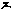
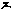

大正新脩大藏經 第18冊
No.854 胎藏梵字真言 (2卷)
【失譯】
第 1 卷
No. 854
胎藏梵字真言上卷
灑淨真言。
 na maḥ sa ma nta bu ddhā nāṃ a pra ti sa me ga ga na sa me sa ma ntā nu ga te pra kṛ ti vi śu ddhe dha rma dhā tu vi śo dha ni svā hā
na maḥ sa ma nta bu ddhā nāṃ a pra ti sa me ga ga na sa me sa ma ntā nu ga te pra kṛ ti vi śu ddhe dha rma dhā tu vi śo dha ni svā hā 
持地真言曰。
na maḥ sa ma nta bu ddhā nāṃ sa rva ta thā ga tā dhi ṣṭā nā dhi ṣṭi te a ca le vi ma le sma ra ṇe pra kṛ ti pa ri śu ddhe svā hā
持香水真言曰（押紙。已下經二具緣品）。
na maḥ sa ma nta bu ddhā nāṃ a gna ye svā hā
略奉持護摩真言曰。
na maḥ sa ma nta bu ddhā nāṃ aḥ ma hā śā nti ga ta śā nti ka ra pra śa ma dha rma ni rjja ta a bhā va svā hā va dha rsa sa □nā prā pta svā hā
大力大護明妃真言曰。
na maḥ sa rva ta thā ga te bhyo sa rva bha ya vi ga te bhyaḥ vi śva mu khe bhyaḥ sa rva thā haṃ khaṃ ra kṣa ma hā va le sa rva ta thā ga ta pu rye ni jja te hūṃ hūṃ trā ṭ trā ṭ a pra ni ha te svā hā
入佛三昧耶真言曰。
na maḥ sa ma nta bu ddhā nāṃ a sa me tri sa me sa ma ye svā hā
法界生真言曰。
na maḥ sa ma nta bu ddhā nāṃ dha rma dha tu svā hā va ko haṃ
金剛薩埵真言曰。
na maḥ sa ma nta va jra ṇāṃ va jra tma ko haṃ
金剛鎧真言曰。
na maḥ sa ma nta va jra ṇaṃ va jra ka va ca hūṃ
如來眼真言曰。
na maḥ sa ma nta bu ddhā nāṃ ta thā ga tā ca kṣu rvya va lo ka ya svā hā
塗香真言曰。
na maḥ sa ma nta bu ddhā nāṃ vi śu ddha ga ndho dbha va svā hā
華供養真言曰。
na maḥ sa ma nta bu ddhā nāṃ ma hā mai trya bhyu dga te svā hā
燒香真言曰。
na maḥ sa ma nta bu ddhā nāṃ dha rma dha tva nu ga te svā hā
飲食真言曰。
na maḥ sa ma nta bu ddhā nāṃ a ra ra ka ra ra va li rda de ma hā va liḥ svā hā
燈明真言曰。
na maḥ sa ma nta bu ddhā nāṃ ta thā ga tā rci spha ra ṇa va bhā sa na ga ga nau dā rya svā hā
閼伽真言曰。
na maḥ sa ma nta bu ddhā nāṃ ga ga na sa mā sa ma svā hā
如來頂相真言曰。
na maḥ sa ma nta bu ddhā nāṃ ga ga nā na nta spha ra ṇa vi śu ddha dha rma ni jja te svā hā
如來甲真言曰。
na maḥ sa ma nta bu ddhā nāṃ pra ca ṇḍa va jra jvā la vi sphu ra hūṃ
如來舌真言。
na maḥ sa ma nta bu ddhā nāṃ ma hā ma hā ta thā ga tā ji hva sa tya dha rma pra ti ṣṭi ta svā hā
如來圓光真言曰。
na maḥ sa ma nta bu ddhā nāṃ jvā lā mā li ni ta thā ga tā rci svā hā
na maḥ sa ma nta bu ddhā nāṃ sa ma tā nu ga ta va ra ja dha rma ni rja ta ma hā ma ha svā hā
彌勒菩薩真言曰。
na maḥ sa ma nta bu ddhā nāṃ a ji taṃ ja ye sa rva sa tvā śa yā nu ga ta svā hā
虛空藏真言曰。
na maḥ sa ma nta bu ddhā nāṃ a kā śa sa ma tā nu ga tā vi ci trāṃ ba ra dha ra svā hā
除蓋障真言曰。
na maḥ sa ma nta bu ddhā nāṃ aḥ sa tva hi tā bhyu dga ta traṃ traṃ raṃ raṃ svā hā
觀自在真言曰。
na maḥ sa ma nta bu ddhā nāṃ sa rva ta thā ga tā va lo ki ta ka rū ṇa ma ya ra ra ra hūṃ jaḥ svā hā
得大勢至真言曰。
na maḥ sa ma nta bu ddhā nāṃ ja ja saḥ svā hā
多羅尊真言曰。
na maḥ sa ma nta bu ddhā nāṃ ka rū ṇe dbha ve tā re tā ri ṇi svā hā
毘俱胝真言曰。
na maḥ sa ma nta bu ddhā nāṃ sa rva bha ya trā □□hūṃ spha ṭ ya svā hā
白處尊真言曰。
na maḥ sa ma nta bu ddhā nāṃ ta thā ga ta vi ṣa ya saṃ bha ve pa dma mā li ni svā hā
何耶揭嘌嚩真言曰。
na maḥ sa ma nta bu ddhā nāṃ hūṃ khā da ḍhaṃ jaṃ spha ṭ ya svā hā
地藏菩薩真言曰。
na maḥ sa ma nta bu ddhā nāṃ ha ha ha su ta nu svā hā
文殊師利真言曰。
na maḥ sa ma nta bu ddhā nāṃ he he ku mā ra ka vi mu kti pa tha svi ta sma ra  pra ti jñāṃ svā hā
pra ti jñāṃ svā hā
金剛手真言曰。
na maḥ sa ma nta va jra ṇaṃ ca ṇḍa ma hā ro ṣa ṇa hūṃ
忙莾計真言曰。
na maḥ sa ma nta va jra ṇaṃ tri ṭa tri ṭa ja yaṃ ti svā hā
金剛鎖真言曰。
na maḥ sa ma nta va jra ṇaṃ hūṃ ba ndha ba ndha ya mo ṭa mo ṭa ya va jre dbha ve sa rva ttrā pra ti ha te svā hā
金剛月靨真言曰。
na maḥ sa ma nta va jra ṇaṃ hrīṃ hūṃ pha ṭa svā hā
金剛針真言曰。
na maḥ sa ma nta va jra ṇaṃ sa rva dha rmma ni ve dha ni va jra su ci va ra de svā hā
一切持金剛真言曰。
na maḥ sa ma nta va jra ṇaṃ hūṃ hūṃ hūṃ pha ṭ pha ṭ jaṃ jaṃ svā hā
一切奉教真言曰。
na maḥ sa ma nta va jra ṇaṃ he he hiṃ ci rā ya si gṛ hṇa gṛ hṇa khā da khā da pa ri pū ra ya sa rva kiṃ ka rā ṇaṃ svā pra ti jñā svā hā
釋迦牟尼真言曰。
na maḥ sa ma nta bu ddhā nāṃ sa rva kle śa ni sa □na sa rva dha rmma va śi rā pra pta ga ga na sa mā sa ma svā hā
毫相真言曰。
na maḥ sa ma nta bu ddhā nāṃ va rā de va ra prā pte hūṃ
一切諸佛頂真言曰。
na maḥ sa ma nta bu ddhā nāṃ vaṃ vaṃ vaṃ hūṃ hūṃ pha ṭ svā hā
無能勝真言曰。
na maḥ sa ma nta bu ddhā nāṃ dhriṃ dhriṃ riṃ riṃ jiṃ jiṃ svā hā
無能勝妃真言曰。
na maḥ sa ma nta bu ddhā nāṃ a pā rā ji te ja yaṃ ti ta ḍi te svā hā
地神真言曰。
na maḥ sa ma nta bu ddhā nāṃ pṛ thi vyai svā hā
毘紐天真言曰。
na maḥ sa ma nta bu ddhā nāṃ vi ṣṇa ve svā hā
伊舍那天真言曰。
na maḥ sa ma nta bu ddhā nāṃ rū dra yā svā hā
風神真言曰。
na maḥ sa ma nta bu ddhā nāṃ vā ya ve svā hā
六美音天。
na maḥ sa ma nta bu ddhā nāṃ su ra svā tyai svā hā
羅剎主真言曰。
na maḥ sa ma nta bu ddhā nāṃ rā kṣa sā dhi pa ta ye svā hā
四閻魔真言曰。
na maḥ sa ma nta bu ddhā nāṃ vai va sva tā ya svā hā
三死王真言曰。
na maḥ sa ma nta bu ddhā nāṃ mṛ tya ve svā hā
黑夜神真言曰。
na maḥ sa ma nta bu ddhā nāṃ kā la rā ttrī ye svā hā
七母等真言曰。
na maḥ sa ma nta bu ddhā nāṃ ma tṛ bhyaḥ svā hā
釋提桓因真言曰。
na maḥ sa ma nta bu ddhā nāṃ śa kra ya svā hā
嚩嚕拏龍真言曰。
na maḥ sa ma nta bu ddhā nāṃ a māṃ pa ta ye svā hā
五梵天真言曰。
na maḥ sa ma nta bu ddhā nāṃ pra ja pa ta ye hā
日天真言曰。
na maḥ sa ma nta bu ddhā nāṃ a di tyā ya svā hā
月天真言。
na maḥ sa ma nta bu ddhā nāṃ ca ndrā ya svā hā
十諸龍真言。
na maḥ sa ma nta bu ddhā nāṃ me gha śa nī ye svā hā
難陀跋難陀真言曰。
na maḥ sa ma nta bu ddhā nāṃ na nde pa na nda ya svā hā
虛空眼明妃真言曰。
na maḥ sa ma nta bu ddhā nāṃ ga ga na va ra la kṣa ṇe ga ga na sa ma ya sa rva to dga tā bhi sā ra saṃ bha ve jvā la nā mo ghā nāṃ svā hā
不動主真言曰。
na maḥ sa ma nta va jra ṇaṃ ca ḍo ma hā ro ṣa ṇa
spha ṭ ya hūṃ ttra ka hāṃ māṃ
降三世真言曰。
na maḥ sa ma nta va jra ṇaṃ ha ha ha vi sma ye sa rva ta thā ga tā vi ṣa ya saṃ bha va ttrai lo kya vi ja ya hūṃ jaḥ svā hā
聲聞真言曰。
na maḥ sa ma nta bu ddhā nāṃ ke tu pra tya ya vi ga ta ka rma ni rja ta hūṃ
緣覺真言曰。
na maḥ sa ma nta bu ddhā nāṃ vaḥ
普一切諸佛菩薩心真言曰。
na maḥ sa ma nta bu ddhā nāṃ sa rva bu ddhā bo dhi sa tva hṛ da yaṃ nyā ve śa niṃ na maḥ sa rva vi de svā hā
普世明妃真言曰。
na maḥ sa ma nta bu ddhā nāṃ lo kā lo kā ka rā ya sa rva de va nā ga ya kṣa ga ndha rvā a su ra ga rū ḍa kiṃ da ra ma hā ra gā di hṛ da yā nyā ka rṣa ya vi ci tra ga ti svā hā
一切諸佛真言曰。
na maḥ sa ma nta bu ddhā nāṃ sa rva thā vi ma ti vi ki ra ṇā dha rma dhā tu ni rja ta saṃ saṃ ha svā hā
不可越守護門真言曰。
na maḥ sa ma nta bu ddhā nāṃ ḍa rdha rṣa ma hā ro ṣa ṇa khā da ya sa rvāṃ ta thā ga tā jriṃ ku rū svā hā
相向守護門真言曰。
na maḥ sa ma nta bu ddhā nāṃ a bhi mu kha he ma hā pra ca ḍo a bhi mu khā gṛ hṇa kha da ya ki ci ra ya si sa ma ya ma nu sma ra svā hā
大結界真言曰。
na maḥ sa ma nta bu ddhā nāṃ sa rva ttra nu ga te va nva ya sī maṃ ma hā sa ma ya ni rja te sma ra ṇa a pra ti ha de dha ka dha ka ca ra ca ra va nva da śa ddi śaṃ sa rva ta thā ga tā ḍa jñā te pra va ra dha rma la ddha bi ja ye bha ga va ti bi ku rū bi ku le le li pu ri svā hā
菩提心真言。
bo dhi a
菩提行真言。
ca ryā ā
成菩提真言曰。
saṃ bo dhi aṃ
涅槃真言曰。
ni rvā ṇa aḥ
降三世真言曰。
na maḥ sa ma nta va jra ṇaṃ tra lo kya bi ja ya hāḥ
不動尊真言曰。
na maḥ sa ma nta va jra ṇaṃ □
無動尊真言曰。
a ca la na thāḥ
除蓋障真言曰。
sa rva nī va ra ṇa bi ṣkā bhī
除蓋障真言曰。
na maḥ sa ma nta bu ddhā nāṃ aḥ
觀自在真言曰。
a va lo ki te śva ra saḥ
金剛手真言曰。
va jra pā ṇi va jra ṇaṃ vaḥ
文殊師利真言曰。
muṃ ju śrī bu ddha nāṃ maṃ
虛空眼真言曰。
ga ga na lo ca nā gaṃ
法界真言曰。
dha rma dhā traḥ raṃ
大勤勇真言。
ma hā vī raḥ khaṃ
水自在真言曰。
ja lai śva rā jaṃ
多羅尊真言曰。
tā rā de vī taṃ
毘俱胝真言曰。
bhyaḥ bhṛ ku ṭī
得大勢至真言曰。
saṃ ma hā svā ma prā ptaḥ
白處尊真言曰。
paṃ pa ḍe ra vā si nī
何耶揭嘌嚩真言曰。
haṃ ha ya grī vaḥ
耶輸陀羅真言曰。
yaṃ ya śo dha rā
寶手真言。
saṃ ra tna pā ṇi
光網真言曰。
jaṃ ja li nī pra bha
釋迦牟尼真言曰。
bhaḥ śa kya mu ni
□佛頂真言曰。
hūṃ hūṃ saṃ huṃ hūṃ ṭrūṃ u ṣṇī ṣa tra yaṃ
白傘蓋佛頂真言曰。
laṃ si tā ta pa tra
勝佛頂真言曰。
śaṃ ja yo ṣṇī ṣa
最勝佛頂真言曰。
śī sī vi ja yo ṣṇī ṣa
光聚佛頂真言。
trīṃ te je rā śi
除障佛頂真言。
hraṃ vi ki ra ṇa paṃ co ṣṇī ṣa
世明妃真言曰。
taṃ haṃ paṃ haṃ yaṃ bi dyā rā ṣṇī lo ke
無能勝真言曰。
huṃ a pa rā ji rā
地神真言曰。
bi pṛ thi vī
計設尼真言曰。
ki li ke śi nī
烏婆計設尼真言曰。
di li u pa ke śi nī
質多羅童子真言曰。
mi li ci trā
財惠童子真言曰。
hi li va su ma ti
除疑怪真言曰。
ha sa nāṃ hau ku ha li naḥ
施一切眾生無畏真言曰。
ra sa nāṃ sa rva sa tvā bha yaṃ da de
除一切惡趣真言曰。
□sa naṃ sa rva pā yā ja haḥ
哀愍惠真言曰。
□sa naṃ □
大慈生真言。
ṭhaṃ ma hā mai trya bhyu dga ta
大□纏真言曰。
yaṃ ma hā ka rū ṇā pra ti ta
除一切熱惱真言曰。
ī □rva dā ha pra śa mi na
不可思議真言曰。
ū a ci ntya ma ti da tta
地藏旗真言曰。
ha ha ha bi sa rva śā pa ri pū rā ka svā hā
寶處真言曰。
daṃ jaṃ ra tna ka ra
寶手真言曰。
ṣa ra tna pā ṇi
持地真言曰。
ṅaṃ dha ra ṇi nva ra ñaṃ
寶印手真言曰。
phaṃ ra tna mu drā ha sta
堅固意真言曰。
ṇāṃ dṛ ḍha dhyā śa ya
虛空無垢真言曰。
haṃ ga ga nā ma la
虛空惠真言曰。
riṃ ga ga na ma te
清淨惠真言曰。
ga taṃ bi śu ddha ma te
行□真言曰。
dhi raṃ ri tra ma te
□惠真言曰。
□si ra bu ddhe
□。
□śrī ha vraṃ ki rā ṇā
諸菩薩所說真言曰。
kṣaḥ ḍa ta ra yaṃ kaṃ ya tho kta bo dhi sa tvā
淨居真言曰。
na mo ra ma dha rma saṃ bha va bi bha va ka tha na saṃ saṃ sa te svā hā
淨居天真言曰。
śu ddho va hā
羅剎婆真言曰。
kraṃ ke ri rā kṣa sa
諸荼吉尼真言曰。
hrīḥ haḥ ḍa ki nī nāṃ
藥叉女真言曰。
ya kṣa bi dyā dha ri ya kṣi ṇī nāṃ
諸毘舍遮真言曰。
pi ci pi ci pi śā ci nī nāṃ
諸部多羅真言曰。
guṃ ī gu i maṃ saṃ te bhū tā nāṃ
諸阿修羅真言曰。
ra ṭaṃ ra ṭaṃ dhvaṃ taṃ mra a a pra
諸摩睺囉伽真言曰。
rā ga ra laṃ viṃ ra liṃ
摩睺羅伽真言曰。
ma ho ra ga
諸緊那羅真言曰。
ha kha sa naṃ bi ha sa naṃ ki nta ra ṇāṃ
諸人真言曰。
i cchā pa raṃ ma ḍo ma ye me sva hā ma nu ṣya ṇaṃ ṭha
無所不至真言曰 已下第三卷（押紙云。已下第三卷悉地出現品）。
na maḥ sa rva ta thā ga re bhyo bi śva mu khe bhyaḥ sa rva thā a ā aṃ aḥ
□空藏明妃真言曰。
na maḥ sa rva ta thā ga te bhyo vi śva mu khe bhyaḥ sa rva thā khaṃ u dga te spha ra hī maṃ ga ga na kaṃ svā hā
滿足一切金剛字句真言曰。
na maḥ sa ma nta bu ddhā nāṃ aḥ bi ra hūṃ khaṃ
ta dya thā ga ga na sa me a pra ti sa me sa rva ta thā ga tā sa nta tṛ ga ga ga na sa ma va ra la kṣa ṇe svā hā
救世者真言曰。
na maḥ sa ma nta bu ddhā nāṃ a
無能害力明妃真言曰。
na maḥ sa rva ta thā ga te bhyaḥ sa rva mu khe bhyaḥ a sa me pa ra me a ca le ga ga ne sma ra ṇe sa rva trā nu ga te svā hā
置字句。
na maḥ sa ma nta bu ddhā nāṃ maṃ
已下第四卷。
【經文資訊】大正藏第 18 冊 No. 0854 胎藏梵字真言
【版本記錄】CBETA 電子佛典 2014.04，完成日期：2014/04/26
【編輯說明】本資料庫由中華電子佛典協會（CBETA）依大正藏所編輯
【原始資料】蕭鎮國大德提供，北美某大德提供
【其他事項】本資料庫可自由免費流通，詳細內容請參閱【中華電子佛典協會資料庫版權宣告】